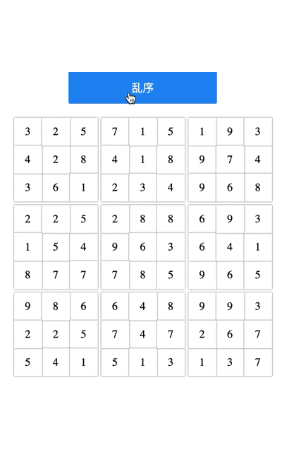

Demo

codepen
Github
npm
Usage
1
2
3
4
| <div class="button-content">
<button id="play" class="play-button">乱序</button>
</div>
<div id="app"></div>
|
1
2
3
4
5
6
7
8
9
| const flipNumber = require('flip-number-9-squares');
import "flip-number-9-squares/index.css";
const config = {
app: 'app',
play: 'play',
time: 1,
timingFunction: 'linear',
};
flipNumber.flip(config);
|
浏览器
使用 dist 目录
参考
https://zhuanlan.zhihu.com/p/146641652
https://github.com/sl1673495/flip-animation
http://sl1673495.gitee.io/flip-animation/